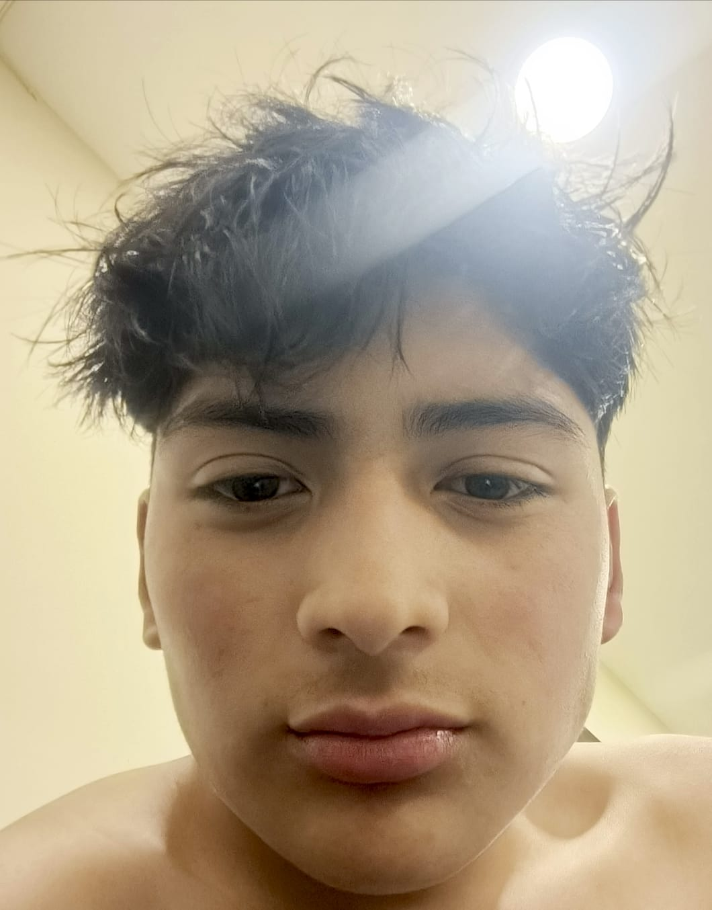

Kevin Azitimbay
Estudiante de Medicina Veterinaria | Interés en manejo de ganado y salud preventiva animal
Riobamba, Ecuador
 Formación Académica
Formación Académica
Medicina Veterinaria
Universidad Regional Autónoma de los Andes (UNIANDES) — Ambato, Ecuador
- Formación integral en ciencias básicas veterinarias: anatomía, fisiología, histología y bioquímica.
- Participación activa en prácticas de laboratorio, observación clínica y actividades extracurriculares.
- Interés enfocado en el manejo de ganado, producción animal y salud preventiva en animales de granja.
 Objetivo Profesional
Objetivo Profesional
- Como futuro médico veterinario, mi propósito es especializarme en el cuidado, manejo y producción de ganado.
- Me motiva contribuir al desarrollo rural, la salud animal y el mejoramiento genético de especies de interés pecuario.
- Aspiro a aplicar mis conocimientos con responsabilidad, ética y compromiso, promoviendo el bienestar animal y la eficiencia productiva.
 Experiencia Académica y Prácticas
Experiencia Académica y Prácticas
Prácticas de laboratorio – UNIANDES
- Manejo de microscopía óptica y técnicas de tinción (hematoxilina-eosina, azul de metileno).
- Análisis histológico de tejidos animales.
- Aplicación rigurosa de normas de bioseguridad en entornos clínicos y de laboratorio.
Proyectos académicos destacados
- Observación comparativa de células bucales y células de cebolla bajo microscopio.
- Análisis estructural y funcional de epitelios en distintos órganos.
- Cálculo de presión osmótica mediante la ecuación de Van’t Hoff.
 Habilidades
Habilidades
 Intereses
Intereses